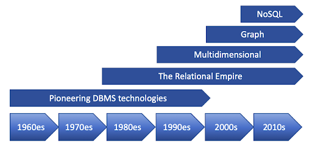

- AGOUA YAO ANGE ALEX
-

-

-


Jusqu'en 1960 les informations étaient enregistrées dans des fichiers manipulées par les logiciels applicatifs. L'idée des bases de données a été lancée en 1960 dans le cadre du programme Apollo. Le but était de créer un dispositif informatique destiné à enregistrer les nombreuses informations en rapport avec le programme spatial, en vue de se poser sur la Lune avant la fin de la décennie. C'est dans ce but que IBM, conjointement avec Rockwell met sur le marché le logiciel Information Management System (IMS). Avec ce SGBD, les informations sont enregistrées dans des bases de données organisées de manière hiérarchique. À la même époque, General Electric, avec l'aide de Charles Bachman met sur le marché le logiciel Integrated Data Store. Avec ce SGBD les informations sont enregistrées dans des bases de données organisées selon un modèle réseau, ce qui permet d'enregistrer des informations ayant une organisation plus complexe que le modèle hiérarchique. En 1965, Dick PICK développe le système d'exploitation Pick, qui comporte un SGBD et le langage Databasic de Charles Bachman. En 2002 la technologie de Pick est utilisée dans des produits contemporains tels que JBase. En 1967, le consortium CODASYL forme un groupe de travail, le database task group abr. DBTG, qui travaille à la normalisation de deux langages informatique en rapport avec les bases de données: le DML et le DDL. Les organisations hiérarchiques et réseau des années 1960 manquaient d'indépendance vis-à-vis du format des fichiers, ils rendaient complexe la manipulation des données et il leur manquait une base théorique. En 1970 Edgar Frank Codd, employé de IBM publie le livre A relational model of data for large shared data banks, un ouvrage qui présente les fondations théoriques de l'organisation relationnelle. Sur la base des travaux de E.F Codd, IBM développe le SGBD System R, qui sera mis sur le marché à la fin des années 1970. Il est destiné à démontrer la faisabilité d'un SGBD relationnel. Le langage informatique propre à ce SGBD est le Structured Query Language (abr. SQL), défini par IBM et destiné à la manipulation des bases de données relationnelles. Charles Bachman reçoit le prix Turing en 1973 pour ces contributions à la technologie des bases de données et Edgar Frank Codd reçoit le prix Turing en 1981 pour les mêmes raisons. En 1978, ANSI publie la description de l'architecture Ansi/Sparc qui sert de modèle de référence en rapport avec l'indépendance des données des SGBD. Les deux SGBD ténors du marché de 2010 que sont IBM DB2 et Oracle Database ont été mis sur le marché en 1979 et sont tous deux basés sur le modèle relationnel. La même année le langage SQL est normalisé par ISO. Les moteurs de recherche et les datawarehouse sont des applications informatiques apparues dans les années 1990, qui ont influencé le marché des SGBD. Les moteurs de recherche ont nécessité le traitement d'informations non structurées et écrites en langage naturel. Et les datawarehouse ont nécessité la collecte et la consolidation de très grandes quantités d'informations en vue de réaliser des tableaux de synthèse. Les modèles d'organisation orienté objet et objet-relationnel sont apparus dans les années 19902. Les premiers SGBD objet-relationnel ont été Postgres, Informix et Oracle Database en 1995. Le standard relatif au langage SQL a été modifié en 1999 pour pouvoir s'appliquer à ce type de SGBD.

Un SGBD est composé de nombreux programmes, parmi lesquels le moteur, le catalogue, le processeur de requêtes, le langage de commande et des outils... ( Voir plus )